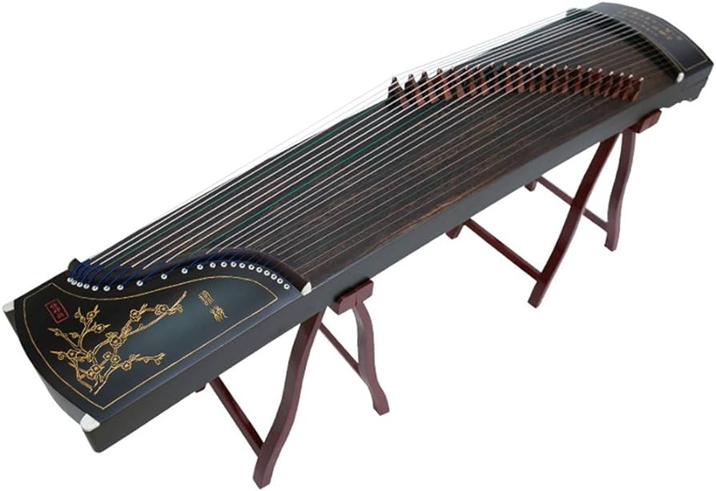

Introduction
Zither is a Chinese plucked instrument and is tuned in a major pentatonic scale. It first became popular during the Spring and Autumn Period (770-476) and become the most popular stringed instrument by the prime time of Tang dynasty (618-907).
The modern zither commonly has 21, 25, or 26 strings, is 64 inches (1.6 m; 5.3 ft) long and tuned in a major pentatonic scale. Zither strings were once made of silk. During 1600s to 1900s, the strings transitioned to only wires such as brass. Modern strings are almost always steel coated in nylon. It has a large, resonant soundboard made from Paulownia wood.
Tuning
Place the zither on a flat surface. The tuning box (the compartment in the head of the instrument) in which tuning pegs are located should be closest to you. Position the tuner so it is close to the sound hole of your instrument. You can hold the tuner directly over the sound hole, place the tuner on top of the soundboard or put the tuner next to the instrument.

We will be tuning the Guzheng to the key of D, which also happens to be the most commonly used key for the Guzheng. The Guzheng is tuned pentatonically, which means the Guzheng strings are tuned to DO, RE, MI, SO, LA. From the top (the thickest string on the Guzheng), the string is tuned to D, followed by E, F#, A and B for the next 4 strings.
Pluck the string and allow the tuner to pick up the sound. Turn the tuning peg clockwise to loosen the string or counterclockwise to tighten the string. Adjust the string until you can pluck the string and the tuner shows the string is tuned to the correct pitch. What makes tuning the Guzheng easy is that the strings follow the same notes (D, E, F#, A, B), but only in different octaves. This means that you would’ve covered 20 out of the 21 strings on the Guzheng! The very last string should be tuned to a.. D!
More information about how to tune a zither can be found here: https://www.easonmusicschool.com/how-to-tune-your-guzheng/
Zither fingerpick

Guzheng players often wear a fingerpick made from materials such as plastic, resin, tortoiseshell, or ivory on one or both hands.
To wear the zither nail, place it on the underside of your finger with the tip protruding. Next, take a strip of surgical tape and stick it onto the nail at one end, then roll over your finger. The tape should go over your finger 2.5 times. Make sure the tape isn't too loose or tight, and that it's just right around the finger. Repeat this process on thumb, index finger, middle finger and ring finger.